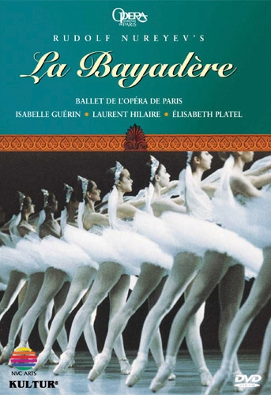

Pu Justin Scarfy Yang 楊靐龘 ☯️
Independent Researcher and Inventor
E-mail Address:
pujustinscarfyyang (at) icloud (dot) com
Welcome
Research
Music
Music
Bayerische Staatsoper
Большой театр
Deutsche Staatsoper Berlin
Мариинский театр
Metropolitan Opera
Opéra national de Paris
Opernhaus Zürich
Royal Opera House
Teatro alla Scala
Wiener Staatsoper
My non-math interest is mainly classical music.
A sample of my music collection is

Minkus: La Bayadère
Guérin · Hilaire · Platel
Paris Opera Ballet · Rudolf Nureyev
and for which I hope to write a review.